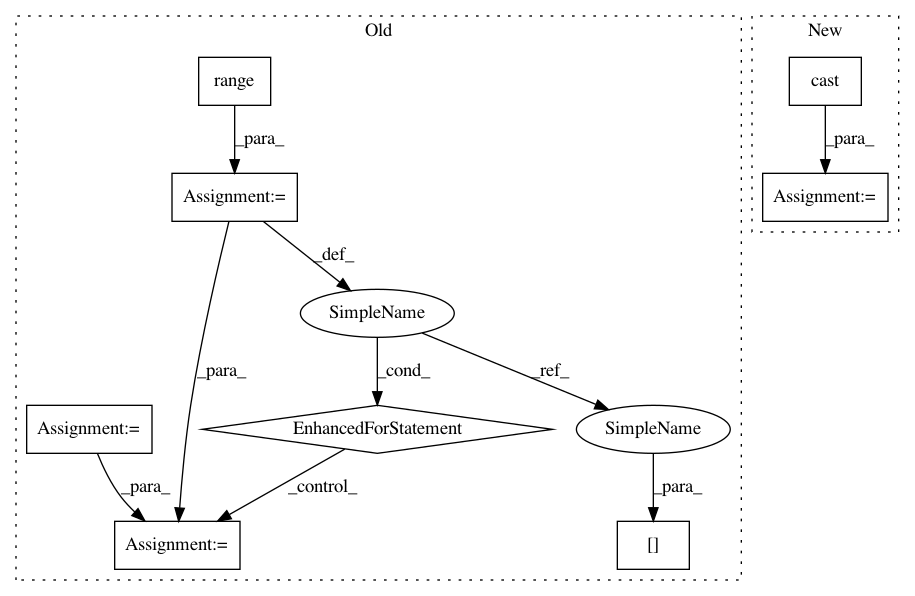

cc8d7ba5562cb2335d975b67e88a81a6bc9b0f46,thinc/loss.py,,categorical_crossentropy,#Any#Any#,8
Before Change
def categorical_crossentropy(scores: Array2d, labels: Array2d) -> Tuple[Array2d, float]:
xp = get_array_module(scores)
target = xp.zeros(scores.shape, dtype="float32")
loss = 0.0
for i in range(len(labels)):
target[i, int(labels[i])] = 1.0
loss += (1.0 - scores[i, int(labels[i])]) ** 2
return scores - target, loss
@registry.losses("categorical_crossentropy.v0")
After Change
if labels.ndim != scores.ndim:
target = to_categorical(labels, n_classes=scores.shape[-1])
else:
target = cast(Array2d, labels)
if scores.shape != target.shape:
raise ValueError(
f"Cannot calculate loss: mismatched shapes. {scores.shape} vs {target.shape}"
)
In pattern: SUPERPATTERN
Frequency: 3
Non-data size: 8
Instances
Project Name: explosion/thinc
Commit Name: cc8d7ba5562cb2335d975b67e88a81a6bc9b0f46
Time: 2020-01-12
Author: honnibal+gh@gmail.com
File Name: thinc/loss.py
Class Name:
Method Name: categorical_crossentropy
Project Name: allenai/allennlp
Commit Name: 5ad7a33a04d8829ad3439b5f9390bd136105f986
Time: 2020-05-28
Author: tobiasr@allenai.org
File Name: allennlp/nn/beam_search.py
Class Name: BeamSearch
Method Name: search
Project Name: explosion/thinc
Commit Name: cc8d7ba5562cb2335d975b67e88a81a6bc9b0f46
Time: 2020-01-12
Author: honnibal+gh@gmail.com
File Name: thinc/loss.py
Class Name:
Method Name: categorical_crossentropy
Project Name: Bihaqo/t3f
Commit Name: 40db92599e7607b97f5b52a4d6a90bef9612c317
Time: 2017-02-11
Author: izmailovpavel@gmail.com
File Name: kronecker.py
Class Name:
Method Name: slog_determinant